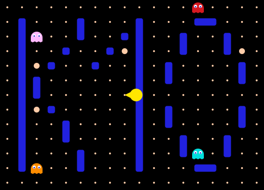
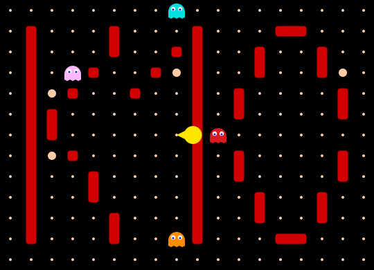
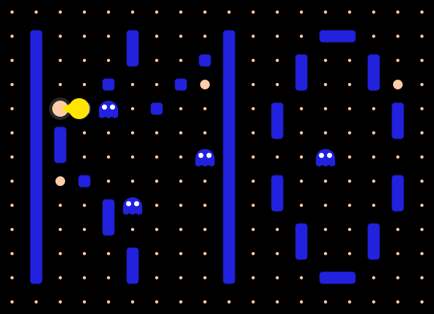

High score
| Rank | Name | Cloud | Zone | Host | Score |
|---|
| Rank | Name | Cloud | Zone | Host | Score |
|---|
| ID | Cloud | Zone | Host | Score | Level | Lives | ET | TXN Count |
|---|
Use your arrow keys or [W,A,S,D] keys to navigate Pac-Man.
To pause / resume the game press [SPACE] or [ESC] or just click into the game area.
Use swipe gestures to navigate Pac-Man.
Alternatively use the arrow buttons underneath the game area to navigate Pac-Man.
To pause / resume the game, touch the game area once.
The maze is shaped like the name K10, in reference to Veeam Kasten for Kubernetes' original software name. There is no ghost house: all four ghosts spawn on the middle row and roam the map freely from the very first tick.
The left and right edges are connected by a tunnel — exit one side and you reappear on the other. The top and bottom edges are not connected for ghosts, so they treat those rows as boundaries when choosing their path.
Ghosts are creatures that hunt pacman and will kill him if they catch him.
All four ghosts are active from the start of every level. Each one has its own targeting rule, and each one has a different “home” corner it retreats to during scatter mode.


Every ghost heads toward its own home corner. Because all four corners are different, the ghosts spread across the map.

After a short scatter period the ghosts switch to chase mode and pursue Pac-Man using each ghost's individual targeting rule. This is indicated by the walls turning red. Chase lasts noticeably longer than scatter, so most of each level is spent being hunted.

Ghosts navigate by computing the shortest path to their current target through the actual maze, so they cannot get stuck in dead-end pockets and will find their way around walls rather than oscillating in place.
The goal of every level is to eat all the white pills without getting caught by the ghosts. One pill is worth 10 points.
In every level there are 4 powerpills, which are a bit bigger than the regular ones. If Pac-Man eats one, he becomes strong enough to eat the ghosts for a short time — the ghosts turn blue to signal this. One powerpill is worth 50 points.

Eating a blue ghost is worth 100 points. Its eyes then travel back to its spawn cell, where it respawns and resumes the hunt.
Current Version: 2.0.0 (22.04.2026)
Pac-Man is Open Source, originally written by platzh1rsch and modified by Ivan Font. You can get the original code here or this modified version here.
This version has been updated by Sylvain Huguet for the Kasten team — the maze is now shaped like "K10" (Veeam Kasten for Kubernetes' original software name), the ghost house has been removed, and ghost navigation uses true shortest-path routing so every ghost keeps hunting instead of getting stuck in dead-ends.
If you have any suggestions how to make this app better, please file an issue on the github repo.
Click to Play
This whole thing was written in HTML5, CSS3 and Javascript (using small bits of jquery). For the basics I was following the "Exploring HTML5 Canvas" Tutorials (Part 1 - 6) by Devhammer. Thanks for the great Tutorial!
For some other stuff, like how to write objectorientated javascript I was following the tutorials over at http://www.codecademy.com/, which is a really great site to learn Javascript and also other languages.